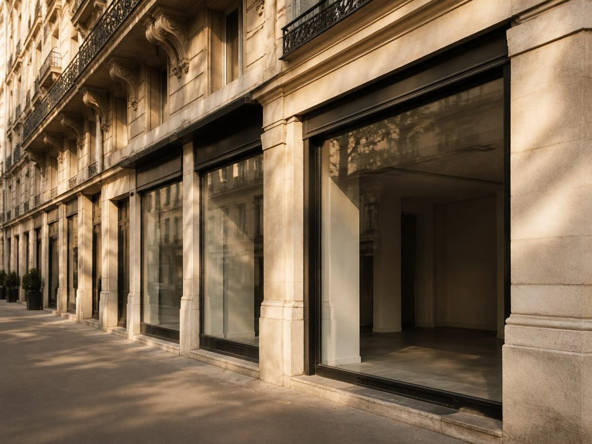

The project index
Each project states what runs today, what was tested and what is not proven yet.
Running or evaluated Partial, paused or pre-pilot Blocked by a gate Stopped
Group 1
Five agents, each owning one job, talking only through MCP. Three have a page; Peritia is design and the orchestrator a synthetic PoC.
F&B agent
AetherixPre-pilot
The F&B agent for boutique hotels: one recommendation a day in WhatsApp, the manager's reply, the outcome recorded next to it.
What it shows: product strategy, a loop measured against outcomes, evaluation gates.
Read the caseEnvironment agent
TacetMaintenance
Predicts how noise, weather and events around a hotel affect guests and revenue, and sends alerts to the RMS and PMS.
What it shows: an agent exposed over MCP, then paused and labelled as such.
Read the caseGuest memory
AnimaCompliance Gated
What a hotel knows about its guests sits in one person's head or in scattered tools, so needs are met late. Anima helps teams anticipate them and adapt the stay, from what guests chose to share, with less strain on operations.
What it shows: privacy by design: consent, decay, and a data-protection gate before launch.
Read the caseNo page yet
Orchestrator · coordination and business rules · Synthetic PoC, in shadow
Peritia · house knowledge · Design
Both are described in the architecture note.
Group 2
Outside the architecture: the assistant of this site, the same thesis in aviation maintenance, a data product, and the company that came before all of it.
The assistant of this site
RoseLive, voice in pilot
Rose answers questions about the page you are reading, from the site's own text.
What it shows: an AI assistant shipped, evaluated and changed in public.
Read the caseAviation maintenance
LoreEvaluated
Captures the tacit knowledge a retiring technician never wrote down and returns it to a junior on the shop floor by voice, always behind the procedure.
What it shows: a safety-first evaluation harness: 64 cases, pure-function graders.
Read the case
Data product, Paris
CompassPartial
Every address has a story. Compass helps entrepreneurs choose premises that fit their project, with the context listings leave out.
What it shows: a data product where every figure carries its source, licence and date.
Read the caseB2G SaaS, co-founded
SonorMVP shipped · stopped 2022
A two-year B2G SaaS I co-founded with three partners, to help cities reduce noise pollution with open data.
What it shows: 0 to 1 with four co-founders, and knowing when to stop.
Read the caseContact
Open to AI Product Manager and Product Builder roles.